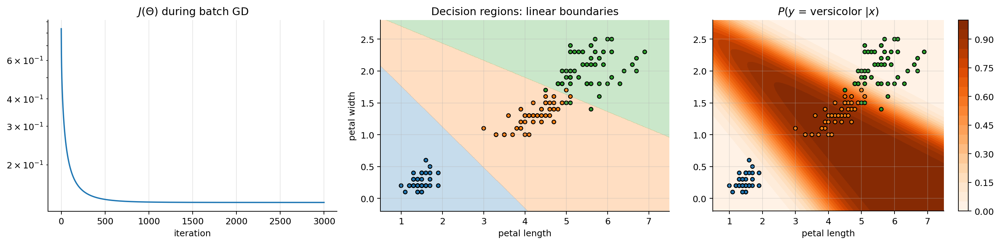
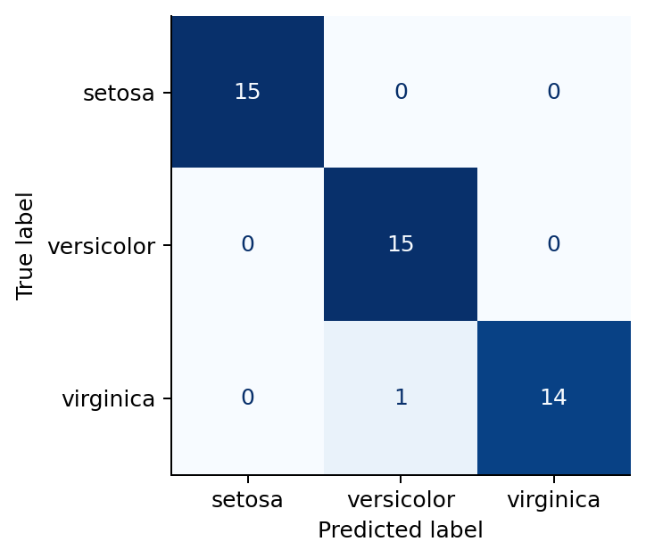
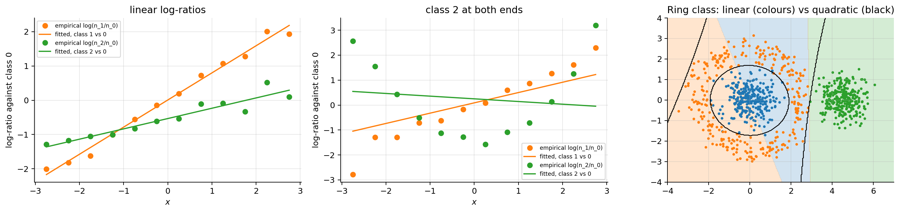
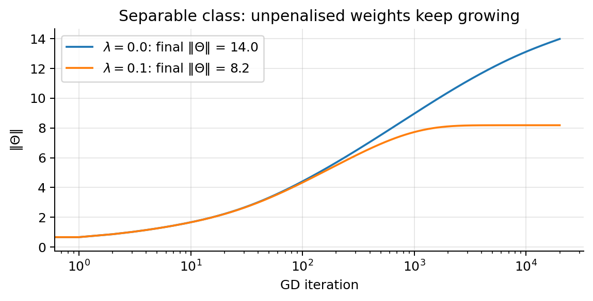
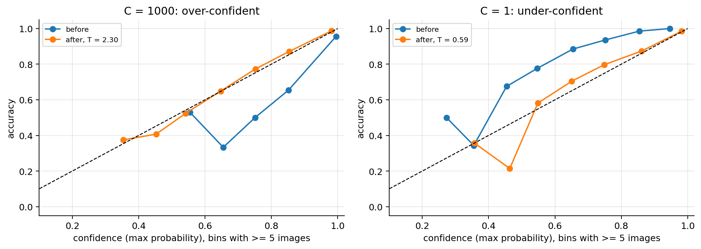
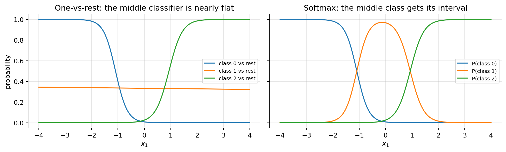

import numpy as np
import matplotlib.pyplot as plt
from scipy import stats, special, optimize
plt.rcParams.update({"figure.dpi": 90, "axes.grid": True, "grid.alpha": 0.3,
"axes.spines.top": False, "axes.spines.right": False})
rng = np.random.default_rng(0)04 · Softmax Regression (multinomial logistic regression)
The extension of logistic regression to \(K > 2\) classes. Everything follows the same recipe: linear scores → probabilities → negative log-likelihood → gradient descent.
What this note covers. How to represent \(K\) classes, the softmax model and its properties (shift invariance and what it means for identifiability, numerical stability with the log-sum-exp trick, linear boundaries between classes), the categorical cross-entropy, its gradient and convexity, an implementation from scratch, and the multiclass metrics of the slides with the damage-severity worked example. Then the assumptions of the model, how to check them and what to do when they fail, including the independence of irrelevant alternatives (section 14), and three practical deep dives: class imbalance with \(K\) classes, calibrating multiclass probabilities with temperature scaling, and one-vs-rest versus softmax (sections 15 to 17).
What you need. Note 02 (logistic regression: sigmoid, cross-entropy, gradient, convexity, metrics, calibration, class imbalance, the assumptions) and, for the view of softmax as a generalised linear model, note 02b. Linear algebra: the Hessian test for convexity from note 01.
After this note you can fit a softmax regression from scratch in a numerically safe way, explain why its parameters are not unique and what fixes that, evaluate a multiclass classifier with per-class, macro, micro and weighted metrics and read its confusion matrix, decide between softmax, one-vs-rest and independent sigmoids, and deal with imbalanced classes, miscalibrated probabilities and non-linear class boundaries.
Notation. As in note 02: \(m\) examples, \(n\) features, \(\mathbf{x}^{(i)}\in\mathbb{R}^{n+1}\) with \(x_0 = 1\), design matrix \(\mathbf{X}\in\mathbb{R}^{m\times(n+1)}\). Classes are \(1,\dots,K\) in the formulas and \(0,\dots,K-1\) in the code.
1. Problem statement and motivation
Labels \(y^{(i)} \in \{1, \dots, K\}\): hand-written digits, iris species, vehicle types, damage severity (minor / moderate / severe). We want \(P(y = k\mid\mathbf{x})\) for every class.
One-vs-rest (note 02, section 13) trains \(K\) independent binary classifiers, “class \(k\) against the rest”:
- \(K\) separate models and \(K\) separate losses;
- the \(K\) outputs do not sum to 1: together they are not a probability distribution.
Softmax regression (multinomial logistic regression): one model, one loss, and the output is a distribution over the \(K\) classes. Same recipe as always: linear scores → probabilities → minus the log-likelihood → gradient descent.
2. Representing the classes
The label is one of \(K\) names: setosa, versicolor, virginica. How do we write it as numbers?
Option A · an integer \(y\in\{1,\dots,K\}\): setosa = 1, versicolor = 2, virginica = 3. Compact, but it invents an order and distances: it says virginica is “twice” versicolor and “further” from setosa. None of that is true. Fine for storing labels, wrong as a regression target.
Option B · a one-hot vector \(\mathbf{y}\in\{0,1\}^K\): a 1 in the position of the true class, 0 elsewhere,
\[ y = 2\ \longrightarrow\ \mathbf{y} = (0,\,1,\,0),\qquad\text{in general } y_k = \mathbb{1}[y = k]. \]
No order, and all classes at the same distance (\(\lVert\mathbf{e}_k - \mathbf{e}_l\rVert = \sqrt2\) for any \(k\ne l\)). It is a probability distribution that puts all its mass on the true class. (Same trick as one-hot encoding of categorical inputs, note 03, now used for the output.)
| label | \(y\) | one-hot \(\mathbf{y}\) |
|---|---|---|
| setosa | 1 | (1, 0, 0) |
| versicolor | 2 | (0, 1, 0) |
| virginica | 3 | (0, 0, 1) |
The model will output a vector \(\mathbf{p} = (p_1, p_2, p_3)\) of probabilities, e.g. \((0.1, 0.7, 0.2)\). Training pushes \(\mathbf{p}\) towards the one-hot target \((0, 1, 0)\): the two vectors are directly comparable. For the whole data set, \(\mathbf{Y}\in\{0,1\}^{m\times K}\) has one one-hot row per example; each row sums to 1.
3. The model
Give each class its own parameter vector \(\boldsymbol{\theta}_k\in\mathbb{R}^{n+1}\) and a linear score (logit)
\[ z_k = \boldsymbol{\theta}_k^\top\mathbf{x}, \qquad k = 1,\dots,K. \]
Stack them as columns of a matrix \(\boldsymbol{\Theta} = [\boldsymbol{\theta}_1, \dots, \boldsymbol{\theta}_K] \in \mathbb{R}^{(n+1)\times K}\), so that \(\mathbf{z} = \boldsymbol{\Theta}^\top\mathbf{x}\), and for the whole data set \(\mathbf{Z} = \mathbf{X}\boldsymbol{\Theta}\in\mathbb{R}^{m\times K}\).
Turn the scores into probabilities with the softmax:
\[ h_{\boldsymbol{\Theta}}(\mathbf{x})_k = P(y=k\mid\mathbf{x};\boldsymbol{\Theta}) = \mathrm{softmax}(\mathbf{z})_k = \frac{e^{z_k}}{\sum_{l=1}^K e^{z_l}} . \]
Prediction: \(\hat{y} = \arg\max_k h_{\boldsymbol{\Theta}}(\mathbf{x})_k = \arg\max_k \boldsymbol{\theta}_k^\top\mathbf{x}\) (softmax is increasing in each score, so it keeps the order: the class with the largest score wins).
Try it. Scores \((2, 1, -1)\) give probabilities \((0.71, 0.26, 0.04)\), which sum to 1. A tie \(z_1 = z_2 = 2\) gives equal probabilities (0.49 each). Multiplying every score by 4 makes the output almost one-hot (0.98 for the arg-max); multiplying by 0.2 makes it much flatter, \((0.42, 0.35, 0.23)\), closer to uniform: the model is unsure. The code below checks these numbers.
def softmax(Z):
Z = Z - Z.max(axis=-1, keepdims=True) # shift invariance -> no overflow (section 8)
E = np.exp(Z)
return E / E.sum(axis=-1, keepdims=True)
for zv, s_ in [((2, 1, -1), 1), ((2, 2, -1), 1), ((2, 1, -1), 4), ((2, 1, -1), 0.2)]:
p_ = softmax(s_ * np.array(zv, float))
print(f"z = {zv}, scaled x {s_}: p = {p_.round(3)}, sum = {p_.sum():.3f}")z = (2, 1, -1), scaled x 1: p = [0.705 0.259 0.035], sum = 1.000
z = (2, 2, -1), scaled x 1: p = [0.488 0.488 0.024], sum = 1.000
z = (2, 1, -1), scaled x 4: p = [0.982 0.018 0. ], sum = 1.000
z = (2, 1, -1), scaled x 0.2: p = [0.422 0.346 0.232], sum = 1.0004. Properties of softmax
- A valid distribution. Each output is \(> 0\) (exponentials are positive) and they sum to 1 (we divide by their sum).
- Shift invariance. Adding the same constant \(c\) to every score changes nothing: \[ \frac{e^{z_k+c}}{\sum_l e^{z_l+c}} = \frac{e^c\,e^{z_k}}{e^c\sum_l e^{z_l}} = \mathrm{softmax}(\mathbf{z})_k . \] Two consequences, each with its own section: the parameters are not identifiable (section 5), and we can compute safely by subtracting \(\max_l z_l\) (numerical stability, section 8).
- Log-odds between two classes are linear. \[ \log\frac{P(y=k\mid\mathbf{x})}{P(y=l\mid\mathbf{x})} = \log\frac{e^{z_k}/\sum_r e^{z_r}}{e^{z_l}/\sum_r e^{z_r}} = z_k - z_l = (\boldsymbol{\theta}_k - \boldsymbol{\theta}_l)^\top\mathbf{x} \] (the denominators cancel). So the boundary between any two classes, where \(P(y=k\mid\mathbf{x}) = P(y=l\mid\mathbf{x})\), is the hyperplane \((\boldsymbol{\theta}_k - \boldsymbol{\theta}_l)^\top\mathbf{x} = 0\), and every decision region is convex (a convex polygon in 2D, possibly unbounded). Proof: the region of class \(k\) is \(R_k = \{\mathbf{x}: (\boldsymbol{\theta}_k - \boldsymbol{\theta}_l)^\top\mathbf{x}\ge 0 \text{ for all } l\}\), an intersection of half-spaces; if \(\mathbf{x}, \mathbf{x}'\in R_k\) and \(t\in[0,1]\), then \((\boldsymbol{\theta}_k - \boldsymbol{\theta}_l)^\top(t\mathbf{x} + (1-t)\mathbf{x}') = t(\dots)^\top\mathbf{x} + (1-t)(\dots)^\top\mathbf{x}' \ge 0\), so the segment stays in \(R_k\). \(\blacksquare\) (Section 14.3 shows what this means when a class is not convex.) The same ratio also gives the independence of irrelevant alternatives (section 14.4): the odds of \(k\) against \(l\) do not involve any other class.
- “Soft” arg-max. Scaling \(\mathbf{z}\) by a large factor makes softmax approach the one-hot vector of the arg-max (if \(z_1\) is the largest, \(e^{sz_l}/e^{sz_1} = e^{-s(z_1 - z_l)}\to 0\) for every \(l\ne 1\) as \(s\to\infty\)); scaling towards 0 makes it uniform (\(e^{0} = 1\) for every class). Dividing the scores by a temperature \(T\) is how multiclass probabilities are recalibrated (section 16).
5. Identifiability: the parameters are not unique
Claim. Adding the same vector \(\mathbf{c}\in\mathbb{R}^{n+1}\) to every \(\boldsymbol{\theta}_k\) changes no prediction and no loss.
Proof. With \(\boldsymbol{\theta}_k' = \boldsymbol{\theta}_k + \mathbf{c}\), every score becomes \(z_k' = (\boldsymbol{\theta}_k + \mathbf{c})^\top\mathbf{x} = z_k + \mathbf{c}^\top\mathbf{x}\). For a given \(\mathbf{x}\) the number \(\mathbf{c}^\top\mathbf{x}\) is the same for all \(k\), so by shift invariance (property 2) \(\mathrm{softmax}(\mathbf{z}') = \mathrm{softmax}(\mathbf{z})\) for every \(\mathbf{x}\). The likelihood depends on \(\boldsymbol{\Theta}\) only through these probabilities, so it is unchanged. \(\blacksquare\)
So there is a whole line (in fact an \((n+1)\)-dimensional family) of equally good \(\boldsymbol{\Theta}\): the parameters are not identifiable, and only the differences \(\boldsymbol{\theta}_k - \boldsymbol{\theta}_l\) have a meaning. In terms of curvature, the loss is flat along the directions \(\mathbf{V} = \mathbf{c}\mathbf{1}^\top\) (the same column \(\mathbf{c}\) in every class): the Hessian of section 10 is singular, so \(J\) is convex but not strictly convex, and the minimiser is not unique.
Two fixes.
- Fix one class as the reference: \(\boldsymbol{\theta}_K = \mathbf{0}\). Then \(z_k - z_K = \boldsymbol{\theta}_k^\top\mathbf{x}\) and each \(\boldsymbol{\theta}_k\) reads as the log-odds of class \(k\) against the reference class: \(e^{\theta_{kj}}\) is an odds ratio (note 02) for class \(k\) versus \(K\). For \(K = 2\) this is exactly logistic regression (section 6). Statistics packages do this.
- Regularise: with an L2 penalty \(\frac{\lambda}{2m}\sum_k\lVert\boldsymbol{\theta}_k\rVert^2\) (on the non-intercept rows), among all equivalent solutions the penalty picks the one with the smallest norm. Minimising \(\sum_k\lVert\boldsymbol{\theta}_k + \mathbf{c}\rVert^2\) over \(\mathbf{c}\) (derivative \(2\sum_k(\boldsymbol{\theta}_k + \mathbf{c}) = \mathbf{0}\)) gives \(\mathbf{c} = -\frac1K\sum_k\boldsymbol{\theta}_k\): the penalised solution is centred, \(\sum_k\boldsymbol{\theta}_k = \mathbf{0}\) (row by row). The penalty also makes \(J\) strictly convex. scikit-learn does this (its default \(C = 1\)).
What gradient descent does without either fix. The gradient (section 9) is \(\frac1m\mathbf{X}^\top(\mathbf{P} - \mathbf{Y})\), and each row of \(\mathbf{P} - \mathbf{Y}\) sums to \(1 - 1 = 0\), so \((\mathbf{P}-\mathbf{Y})\mathbf{1} = \mathbf{0}\) and every row of the gradient sums to 0. Therefore the row sums of \(\boldsymbol{\Theta}\) (its component along the flat directions) never change: gradient descent keeps whatever the initialisation put there. Starting from \(\boldsymbol{\Theta} = \mathbf{0}\) gives the centred solution. The code checks all of this on a small synthetic 3-class problem: two runs whose initialisations differ by \(\mathbf{c}\mathbf{1}^\top\) give identical probabilities, their \(\boldsymbol{\Theta}\) differ by exactly \(\mathbf{c}\mathbf{1}^\top\) at the end, and scikit-learn’s coefficients sum to 0 across classes.
from sklearn.linear_model import LogisticRegression
rng5 = np.random.default_rng(5)
centres = np.array([[-1.0, -0.5], [1.0, -0.5], [0.0, 1.0]])
X5raw = np.vstack([c + rng5.normal(0, 1.0, (100, 2)) for c in centres]); y5 = np.repeat([0, 1, 2], 100)
X5 = np.c_[np.ones(300), X5raw]; Y5 = np.eye(3)[y5]
def gd_softmax(X, Y, Theta0, alpha=0.5, n_iter=2000):
Theta = Theta0.copy()
for _ in range(n_iter):
Theta -= alpha * X.T @ (softmax(X @ Theta) - Y) / len(X)
return Theta
c = rng5.normal(0, 3, 3) # the same column c added to every class
Th_a = gd_softmax(X5, Y5, np.zeros((3, 3)))
Th_b = gd_softmax(X5, Y5, np.outer(c, np.ones(3)))
print("max |P_a - P_b| :", np.abs(softmax(X5 @ Th_a) - softmax(X5 @ Th_b)).max())
print("Theta_b - Theta_a (rows: intercept, x1, x2; columns: classes):\n", (Th_b - Th_a).round(6), "\nc =", c.round(6))
print("row sums of Theta_a :", Th_a.sum(1).round(10))
sk5 = LogisticRegression().fit(X5raw, y5) # L2 penalty, C = 1
print("sklearn coef_ summed over classes:", sk5.coef_.sum(0).round(10), " intercepts summed:", round(sk5.intercept_.sum(), 6))max |P_a - P_b| : 2.609024107869118e-15
Theta_b - Theta_a (rows: intercept, x1, x2; columns: classes):
[[ 6.053317 6.053317 6.053317]
[-2.237718 -2.237718 -2.237718]
[ 0.611088 0.611088 0.611088]]
c = [ 6.053317 -2.237718 0.611088]
row sums of Theta_a : [-0. 0. 0.]
sklearn coef_ summed over classes: [0. 0.] intercepts summed: 0.06. \(K = 2\) gives back logistic regression
With two classes, divide numerator and denominator by \(e^{z_1}\):
\[ P(y=1\mid\mathbf{x}) = \frac{e^{z_1}}{e^{z_1} + e^{z_2}} = \frac{1}{1 + e^{z_2 - z_1}} = \frac{1}{1 + e^{-(z_1 - z_2)}} = \sigma\big((\boldsymbol{\theta}_1 - \boldsymbol{\theta}_2)^\top\mathbf{x}\big). \]
This is logistic regression with \(\boldsymbol{\theta} = \boldsymbol{\theta}_1 - \boldsymbol{\theta}_2\). Only the difference matters: property 2 again (fixing \(\boldsymbol{\theta}_2 = \mathbf{0}\) gives exactly the logistic parameters). Everything we learned for logistic regression is the \(K=2\) special case of what follows.
7. Loss: categorical cross-entropy
Encode the label as a one-hot vector \(\mathbf{y}^{(i)}\in\{0,1\}^K\) with \(y^{(i)}_k = \mathbb{1}[y^{(i)} = k]\) (section 2), and write \(p^{(i)}_k = h_{\boldsymbol{\Theta}}(\mathbf{x}^{(i)})_k\).
The model says \(y^{(i)}\) follows a categorical distribution. One formula covers every class, because only the true class’s factor is not 1 (any number to the power 0 is 1):
\[ P(y^{(i)}\mid\mathbf{x}^{(i)};\boldsymbol{\Theta}) = \prod_{k=1}^K \big(p^{(i)}_k\big)^{y^{(i)}_k}. \]
With independent examples, the log-likelihood is the sum of the logs, and minus its mean is
\[ \boxed{J(\boldsymbol{\Theta}) = -\frac{1}{m}\sum_{i=1}^m\sum_{k=1}^K y^{(i)}_k\log p^{(i)}_k = -\frac{1}{m}\sum_{i=1}^m \log p^{(i)}_{y^{(i)}}} \]
i.e. minus the log of the probability given to the correct class. For \(K=2\) it is exactly the binary cross-entropy of note 02. Again, minimising \(J\) = maximum likelihood.
A form that is useful for the derivations: substitute \(p_y = e^{z_y}/\sum_l e^{z_l}\),
\[ -\log p_{y} = -\log e^{z_y} + \log\sum_l e^{z_l} = -z_{y} + \log\sum_l e^{z_l} = -z_y + \mathrm{LSE}(\mathbf{z}), \]
where \(\mathrm{LSE}(\mathbf{z}) = \log\sum_l e^{z_l}\) is the log-sum-exp function.
8. Numerical stability: the log-sum-exp trick
Computing \(e^{z_k}\) directly fails for scores of realistic size. In double precision the largest number is about \(1.8\times10^{308} = e^{709.8}\), so \(e^{1000}\) overflows to infinity, and \(e^{-1000}\) underflows to 0. Softmax of \((1000, 999, 998)\) is then \(\infty/\infty\) = NaN, and softmax of \((-1000, -1001, -1002)\) is \(0/0\) = NaN, although both are perfectly ordinary distributions (the same one, by shift invariance).
The trick. Let \(M = \max_l z_l\). Factor \(e^M\) out of the sum:
\[ \begin{aligned} \mathrm{LSE}(\mathbf{z}) = \log\sum_l e^{z_l} &= \log\Big(e^{M}\sum_l e^{z_l - M}\Big) && (e^{z_l} = e^{M}e^{z_l - M})\\ &= M + \log\sum_l e^{z_l - M} && (\log(ab) = \log a + \log b) \end{aligned} \]
Now every exponent \(z_l - M\le 0\), so no exponential overflows, and the largest term is \(e^0 = 1\), so the sum is at least 1 and its logarithm never sees 0. The same shift gives \(\mathrm{softmax}(\mathbf{z}) = \mathrm{softmax}(\mathbf{z} - M)\) (property 2), which is what the softmax function of section 3 does, and the log-probabilities \(\log p_k = z_k - \mathrm{LSE}(\mathbf{z})\) can be computed without ever forming \(p_k\).
Compute the loss from the scores, not from the probabilities. A common workaround, \(-\log(p_y + 10^{-12})\), avoids \(\log 0\) but silently caps the loss of a confident mistake at \(-\log 10^{-12} = 27.6\). The exact value \(\mathrm{LSE}(\mathbf{z}) - z_y\) can be far larger. (The implementation of section 11 uses the workaround, which is harmless there; scipy.special.logsumexp and the loss functions of deep-learning libraries use the exact form.) The demonstration below switches off numpy’s overflow warnings for the naive version only, to print its NaNs.
def log_softmax(Z):
return Z - special.logsumexp(Z, axis=-1, keepdims=True) # z_k - LSE(z), stable
for zv in [np.array([1000.0, 999.0, 998.0]), np.array([-1000.0, -1001.0, -1002.0])]:
with np.errstate(over="ignore", invalid="ignore"):
naive = np.exp(zv) / np.exp(zv).sum()
print(f"z = {zv}: naive softmax = {naive}, stable softmax = {softmax(zv).round(4)}, log-softmax = {log_softmax(zv).round(4)}")
z_wrong = np.array([0.0, 50.0, 100.0]) # true class 0, the model is confidently wrong
print(f"loss of a confident mistake: exact LSE(z) - z_y = {special.logsumexp(z_wrong) - z_wrong[0]:.2f}; "
f"-log(p_y + 1e-12) = {-np.log(softmax(z_wrong)[0] + 1e-12):.2f}")z = [1000. 999. 998.]: naive softmax = [nan nan nan], stable softmax = [0.6652 0.2447 0.09 ], log-softmax = [-0.4076 -1.4076 -2.4076]
z = [-1000. -1001. -1002.]: naive softmax = [nan nan nan], stable softmax = [0.6652 0.2447 0.09 ], log-softmax = [-0.4076 -1.4076 -2.4076]
loss of a confident mistake: exact LSE(z) - z_y = 100.00; -log(p_y + 1e-12) = 27.639. Gradient
Step 1 · derivative with respect to the scores. For one example with true class \(y\), \(\ell = -z_y + \log\sum_l e^{z_l}\) (section 7). Differentiate with respect to \(z_k\):
\[ \frac{\partial\ell}{\partial z_k} = -\mathbb{1}[y=k] + \frac{e^{z_k}}{\sum_l e^{z_l}} = p_k - y_k , \]
(the first term is \(-1\) only for \(k = y\); the derivative of \(\log u\) is \(u'/u\) with \(\partial u/\partial z_k = e^{z_k}\)). As a vector, \(\nabla_{\mathbf{z}}\ell = \mathbf{p} - \mathbf{y}\): predicted distribution minus one-hot target.
Step 2 · chain rule. \(z_k = \boldsymbol{\theta}_k^\top\mathbf{x}\) depends only on \(\boldsymbol{\theta}_k\), with \(\nabla_{\boldsymbol{\theta}_k}z_k = \mathbf{x}\), so \(\nabla_{\boldsymbol{\theta}_k}\ell = \frac{\partial\ell}{\partial z_k}\mathbf{x} = (p_k - y_k)\,\mathbf{x}\). Averaging over the examples,
\[ \nabla_{\boldsymbol{\theta}_k}J = \frac{1}{m}\sum_{i=1}^m\big(p^{(i)}_k - y^{(i)}_k\big)\,\mathbf{x}^{(i)}, \qquad\text{or for all classes at once}\qquad \boxed{\nabla_{\boldsymbol{\Theta}}J = \frac{1}{m}\mathbf{X}^\top(\mathbf{P} - \mathbf{Y})} \]
where \(\mathbf{P}, \mathbf{Y}\in\mathbb{R}^{m\times K}\) hold the predicted probabilities and the one-hot labels (column \(k\) of \(\mathbf{X}^\top(\mathbf{P}-\mathbf{Y})\) is \(\sum_i (p^{(i)}_k - y^{(i)}_k)\mathbf{x}^{(i)}\)).
| model | gradient |
|---|---|
| linear | \(\frac1m\mathbf{X}^\top(\mathbf{X}\boldsymbol{\theta}-\mathbf{y})\) |
| logistic | \(\frac1m\mathbf{X}^\top(\sigma(\mathbf{X}\boldsymbol{\theta})-\mathbf{y})\) |
| softmax | \(\frac1m\mathbf{X}^\top(\mathbf{P}-\mathbf{Y})\) |
Always (prediction − target) × input (note 02b explains why: all three are generalised linear models with their canonical link). Batch gradient descent: \(\boldsymbol{\Theta}\leftarrow\boldsymbol{\Theta} - \alpha\nabla_{\boldsymbol{\Theta}}J\). L2 regularisation adds \(\frac{\lambda}{m}\boldsymbol{\Theta}\) to the gradient (except the intercept row).
10. Convexity
\(J\) is the average of \(\ell = -z_y + \mathrm{LSE}(\mathbf{z})\), with \(\mathbf{z} = \boldsymbol{\Theta}^\top\mathbf{x}\) linear in \(\boldsymbol{\Theta}\). A linear term (\(-z_y\)) is convex, and a convex function composed with a linear map is convex, so it is enough to show that LSE is convex in \(\mathbf{z}\).
Its gradient is \(\mathbf{p} = \mathrm{softmax}(\mathbf{z})\) (step 1 above without the \(-z_y\)). Differentiating \(p_k = e^{z_k}/\sum_l e^{z_l}\) with the quotient rule,
\[ \frac{\partial p_k}{\partial z_j} = \frac{\mathbb{1}[k=j]\,e^{z_k}\sum_l e^{z_l} - e^{z_k}e^{z_j}}{\big(\sum_l e^{z_l}\big)^2} = p_k\big(\mathbb{1}[k=j] - p_j\big), \]
so the Hessian of LSE is \(\mathrm{diag}(\mathbf{p}) - \mathbf{p}\mathbf{p}^\top\). For any \(\mathbf{v}\):
\[ \mathbf{v}^\top\big(\mathrm{diag}(\mathbf{p}) - \mathbf{p}\mathbf{p}^\top\big)\mathbf{v} = \sum_k p_kv_k^2 - \Big(\sum_k p_kv_k\Big)^2 = \mathrm{Var}_{k\sim\mathbf{p}}[v_k] \;\ge 0 . \]
It is the variance of the numbers \(v_k\) when \(k\) is drawn with probabilities \(\mathbf{p}\) (\(\mathbb{E}[v^2] - \mathbb{E}[v]^2\)), so it is never negative. LSE is convex, hence \(J\) is convex. \(\blacksquare\)
Not strictly convex. The variance is 0 when all \(v_k\) are equal, \(\mathbf{v} = c\mathbf{1}\): indeed \((\mathrm{diag}(\mathbf{p}) - \mathbf{p}\mathbf{p}^\top)\mathbf{1} = \mathbf{p} - \mathbf{p}(\mathbf{p}^\top\mathbf{1}) = \mathbf{p} - \mathbf{p} = \mathbf{0}\). In parameter space, moving \(\boldsymbol{\Theta}\) along \(\mathbf{c}\mathbf{1}^\top\) moves every \(\mathbf{z}\) along \((\mathbf{c}^\top\mathbf{x})\mathbf{1}\), a zero-curvature direction for every example: that is the non-identifiability of section 5 seen in the Hessian. L2 regularisation adds \(\frac{\lambda}{m}\) times the identity (on the penalised rows) and makes \(J\) strictly convex.
11. Implementation from scratch
Iris data set, 3 classes, 2 features (petal length and width) so that we can draw the regions.
from sklearn.datasets import load_iris
from sklearn.model_selection import train_test_split
iris = load_iris()
Xraw, y = iris.data[:, 2:4], iris.target # petal length, petal width
Xtr_raw, Xte_raw, ytr, yte = train_test_split(Xraw, y, test_size=0.3, stratify=y, random_state=0)
mu, sd = Xtr_raw.mean(0), Xtr_raw.std(0)
add1 = lambda A: np.c_[np.ones(len(A)), (A - mu) / sd]
Xtr, Xte = add1(Xtr_raw), add1(Xte_raw)
K = 3
Ytr = np.eye(K)[ytr] # one-hot (m x K)
def J(Theta, X, Y, lam=0.0):
P = softmax(X @ Theta)
return -np.mean(np.sum(Y * np.log(P + 1e-12), axis=1)) + lam / (2 * len(X)) * np.sum(Theta[1:] ** 2)
def grad_J(Theta, X, Y, lam=0.0):
G = X.T @ (softmax(X @ Theta) - Y) / len(X)
G[1:] += lam / len(X) * Theta[1:]
return G
Theta = np.zeros((Xtr.shape[1], K)); costs = []
for it in range(3000):
Theta -= 0.5 * grad_J(Theta, Xtr, Ytr, lam=0.1)
costs.append(J(Theta, Xtr, Ytr, lam=0.1))
acc = np.mean(np.argmax(Xte @ Theta, axis=1) == yte)
print("Theta (rows: intercept, petal length, petal width; columns: classes)\n", Theta.round(2))
print(f"test accuracy = {acc:.3f}")Theta (rows: intercept, petal length, petal width; columns: classes)
[[-1.23 3.34 -2.11]
[-4.07 0.31 3.76]
[-3.75 -0.85 4.6 ]]
test accuracy = 0.978g1, g2 = np.meshgrid(np.linspace(0.5, 7.5, 400), np.linspace(-0.2, 2.8, 400))
G = add1(np.c_[g1.ravel(), g2.ravel()]); Pg = softmax(G @ Theta)
fig, axes = plt.subplots(1, 3, figsize=(16, 4))
axes[0].plot(costs); axes[0].set_yscale("log"); axes[0].set_xlabel("iteration"); axes[0].set_title(r"$J(\Theta)$ during batch GD")
cols = np.array(["C0", "C1", "C2"])
axes[1].contourf(g1, g2, Pg.argmax(1).reshape(g1.shape), levels=[-0.5, 0.5, 1.5, 2.5], colors=cols, alpha=0.25)
axes[1].scatter(Xraw[:, 0], Xraw[:, 1], c=cols[y], edgecolor="k", s=18)
axes[1].set_title("Decision regions: linear boundaries"); axes[1].set_xlabel("petal length"); axes[1].set_ylabel("petal width")
cs = axes[2].contourf(g1, g2, Pg[:, 1].reshape(g1.shape), levels=20, cmap="Oranges"); plt.colorbar(cs, ax=axes[2])
axes[2].scatter(Xraw[:, 0], Xraw[:, 1], c=cols[y], edgecolor="k", s=18)
axes[2].set_title(f"$P(y$ = {iris.target_names[1]} $| x)$"); axes[2].set_xlabel("petal length")
plt.tight_layout(); plt.show()
The comparison with scikit-learn needs the same penalty and a common convention for the non-identified part: scikit-learn minimises \(C\sum_i\ell_i + \frac12\sum_k\lVert\boldsymbol{\theta}_k\rVert^2\) (without the intercepts), which divided by \(Cm\) is our \(J\) with \(\lambda = 1/C\); and we centre each row across the classes (section 5) before comparing.
# sklearn minimises C * sum(loss) + 1/2 ||W||^2 == mean(loss) + 1/(2 C m) ||W||^2, so our lambda = 1/C
Theta_long = np.zeros((Xtr.shape[1], K))
for it in range(30000): # run our GD to full convergence for a fair comparison
Theta_long -= 0.5 * grad_J(Theta_long, Xtr, Ytr, lam=0.1)
sk = LogisticRegression(C=1 / 0.1, max_iter=5000, tol=1e-10).fit(Xtr[:, 1:], ytr) # multinomial for K>2
print("our Theta, centred per row (softmax only identifies differences):\n", (Theta_long - Theta_long.mean(1, keepdims=True)).round(3))
print("sklearn [intercept; coef], centred per row:\n", (np.c_[sk.intercept_, sk.coef_].T - np.c_[sk.intercept_, sk.coef_].T.mean(1, keepdims=True)).round(3))
P_ours = softmax(Xte @ Theta)our Theta, centred per row (softmax only identifies differences):
[[-1.231 3.352 -2.121]
[-4.073 0.297 3.775]
[-3.766 -0.839 4.605]]
sklearn [intercept; coef], centred per row:
[[-1.231 3.352 -2.121]
[-4.073 0.297 3.775]
[-3.766 -0.839 4.605]]Try it. The same algorithm on three synthetic clusters of 40 points (two features, \(\alpha = 0.5\)). At iteration 0, \(\boldsymbol{\Theta} = \mathbf{0}\), every class has probability \(\frac13\) and \(J = \log 3 = 1.099\). Regions appear within a few iterations (at iteration 5, \(J = 0.384\) and the training accuracy is already 0.992), \(J\) keeps falling (0.136 at iteration 30, 0.065 at 150), and by iteration 150 the boundaries are straight lines (property 3) and the colours saturate away from them (the colour is the predicted class; its strength is the predicted probability).
12. Multiclass metrics
| One-vs-rest (OvR) | Softmax (multinomial) | |
|---|---|---|
| Training | \(K\) independent binary logistic regressions (“class \(k\)” vs “the rest”) | one joint model, one loss |
| Probabilities | the \(K\) outputs don’t sum to 1 (need re-normalising) | a proper distribution by construction |
| When | any binary classifier (e.g. SVMs, note 05); classes not mutually exclusive (multi-label, section 14.1) | mutually exclusive classes |
(Section 17 compares the two in detail.)
The confusion matrix becomes \(K\times K\): rows = actual class, columns = predicted class, the diagonal holds the hits. Precision, recall and \(F_1\) are computed per class (that class against the rest: TP = the diagonal cell, FP = the rest of its column, FN = the rest of its row), then averaged:
- macro: the plain mean over the classes. Every class counts the same: a rare class that is badly predicted pulls it down.
- weighted: the mean weighted by the class frequencies (supports). Dominated by the big classes.
- micro: pool all the TP, FP and FN first, then compute the metric. For single-label problems it equals the accuracy: every misclassified example is one FP (for the predicted class) and one FN (for the true class), so pooled FP = pooled FN = number of errors, and micro-precision = micro-recall = micro-\(F_1\) = hits / \(m\).
- Balanced accuracy = the macro average of the recalls.
Log-loss (= \(J\) on the test set) evaluates the probabilities. On iris (our model, test set):
from sklearn.metrics import ConfusionMatrixDisplay, classification_report, log_loss, confusion_matrix
yhat = P_ours.argmax(1)
print(classification_report(yte, yhat, target_names=iris.target_names, digits=3))
print(f"test log-loss = {log_loss(yte, P_ours):.3f}")
fig, ax = plt.subplots(figsize=(4, 3.6))
ConfusionMatrixDisplay.from_predictions(yte, yhat, display_labels=iris.target_names, ax=ax, colorbar=False, cmap="Blues")
ax.grid(False); plt.tight_layout(); plt.show() precision recall f1-score support
setosa 1.000 1.000 1.000 15
versicolor 0.938 1.000 0.968 15
virginica 1.000 0.933 0.966 15
accuracy 0.978 45
macro avg 0.979 0.978 0.978 45
weighted avg 0.979 0.978 0.978 45
test log-loss = 0.083
A worked example: damage severity of 100 cars
100 damaged cars: 70 minor, 20 moderate, 10 severe. Rows: actual, columns: predicted.
Per class. Precision = diagonal ÷ column total; recall = diagonal ÷ row total; \(F_1 = \frac{2TP}{2TP+FP+FN}\):
| class | precision | recall | \(F_1\) | share |
|---|---|---|---|---|
| minor | 65/71 = 0.92 | 65/70 = 0.93 | 130/141 = 0.92 | 70 % |
| moderate | 12/19 = 0.63 | 12/20 = 0.60 | 24/39 = 0.62 | 20 % |
| severe | 6/10 = 0.60 | 6/10 = 0.60 | 12/20 = 0.60 | 10 % |
\[ \begin{aligned} \text{accuracy} = \text{micro-}F_1 &= \frac{65+12+6}{100} = 0.83 \\ \text{macro-}F_1 &= \frac{0.92+0.62+0.60}{3} = 0.71 && \text{(every class counts the same)}\\ \text{weighted-}F_1 &= 0.7\cdot0.92+0.2\cdot0.62+0.1\cdot0.60 = 0.83 && \text{(weights = the class shares)}\\ \text{balanced accuracy} &= \frac{0.93 + 0.60 + 0.60}{3} = 0.71 && \text{(macro recall)} \end{aligned} \]
Accuracy looks fine, but the costly severe class is caught only 6 times out of 10. Macro-\(F_1\) exposes it; always show the per-class table too. The code recomputes everything from the matrix and cross-checks with scikit-learn on label vectors rebuilt from it.
from sklearn.metrics import precision_recall_fscore_support, f1_score, balanced_accuracy_score, accuracy_score
M = np.array([[65, 4, 1], [5, 12, 3], [1, 3, 6]]); names = ["minor", "moderate", "severe"]
tp = np.diag(M); prec = tp / M.sum(0); rec = tp / M.sum(1); f1 = 2 * tp / (M.sum(0) + M.sum(1)); share = M.sum(1) / M.sum()
for k, nm in enumerate(names):
print(f"{nm:>9}: precision {prec[k]:.3f} recall {rec[k]:.3f} F1 {f1[k]:.3f} share {share[k]:.0%}")
print(f"accuracy {tp.sum() / M.sum():.3f} | macro-F1 {f1.mean():.3f} | weighted-F1 {share @ f1:.3f} | balanced accuracy {rec.mean():.3f}")
y_true = np.repeat(np.repeat([0, 1, 2], 3), M.ravel()); y_pred = np.repeat(np.tile([0, 1, 2], 3), M.ravel()) # rebuild the 100 labels
print(f"sklearn: accuracy {accuracy_score(y_true, y_pred):.3f} | micro-F1 {f1_score(y_true, y_pred, average='micro'):.3f} | "
f"macro-F1 {f1_score(y_true, y_pred, average='macro'):.3f} | weighted-F1 {f1_score(y_true, y_pred, average='weighted'):.3f} | "
f"balanced accuracy {balanced_accuracy_score(y_true, y_pred):.3f}") minor: precision 0.915 recall 0.929 F1 0.922 share 70%
moderate: precision 0.632 recall 0.600 F1 0.615 share 20%
severe: precision 0.600 recall 0.600 F1 0.600 share 10%
accuracy 0.830 | macro-F1 0.712 | weighted-F1 0.828 | balanced accuracy 0.710
sklearn: accuracy 0.830 | micro-F1 0.830 | macro-F1 0.712 | weighted-F1 0.828 | balanced accuracy 0.71013. Reading a confusion matrix
A \(K\times K\) matrix carries more than the averages. Four readings, on the damage example:
- Normalise by rows (divide each row by its total): the diagonal is each class’s recall, and the off-diagonal entries say where each class’s examples go.
- Normalise by columns: the diagonal is each class’s precision, and the column says what a prediction of that class really contains.
- Largest off-diagonal cells: the pairs the model confuses. With ordered classes (severity), look at how far the errors are: confusing neighbours (minor ↔︎ moderate) is less serious than skipping a level (minor ↔︎ severe). Most errors between neighbours suggest the features cannot resolve the boundaries finely; many distant errors suggest data problems (mislabelled images) or a missing feature. (Ordered classes can also be modelled with an ordinal regression, which uses the order that softmax ignores.)
- Weight by costs: with a cost matrix \(\mathbf{C}\) (\(C_{kj}\) = cost of predicting \(j\) when the truth is \(k\)), the total cost is \(\sum_{k,j}M_{kj}C_{kj}\), the multiclass version of note 02’s expected cost; section 15 derives the decision rule that minimises it.
Mr = M / M.sum(1, keepdims=True); Mc = M / M.sum(0, keepdims=True)
print("row-normalised (recall on the diagonal):\n", Mr.round(2))
print("column-normalised (precision on the diagonal):\n", Mc.round(2))
dist = np.abs(np.subtract.outer(np.arange(3), np.arange(3)))
print(f"errors between neighbouring levels: {M[dist == 1].sum()}, errors skipping a level: {M[dist == 2].sum()}")
C_cost = np.array([[0, 1, 2], [2, 0, 1], [10, 4, 0]]) # e.g. under-estimating a severe damage is the worst error
print(f"total cost with this cost matrix: {np.sum(M * C_cost)} (of which from under-estimated severe cars: {M[2, 0] * C_cost[2, 0] + M[2, 1] * C_cost[2, 1]})")row-normalised (recall on the diagonal):
[[0.93 0.06 0.01]
[0.25 0.6 0.15]
[0.1 0.3 0.6 ]]
column-normalised (precision on the diagonal):
[[0.92 0.21 0.1 ]
[0.07 0.63 0.3 ]
[0.01 0.16 0.6 ]]
errors between neighbouring levels: 15, errors skipping a level: 2
total cost with this cost matrix: 41 (of which from under-estimated severe cars: 22)Of the 17 errors, 15 are between neighbouring levels and only 2 skip a level. With a cost matrix that punishes under-estimating severe damage, the four severe cars predicted as minor or moderate are fewer than a quarter of the errors but cost \(1\cdot 10 + 3\cdot 4 = 22\) of the \(41\) cost units: more than half.
14. Assumptions: what they mean, how to check them, what to do
Softmax regression inherits the assumptions of logistic regression (note 02, section 14) and adds two that only exist with more than two classes: that the classes are mutually exclusive, and the independence of irrelevant alternatives. Like logistic regression it does not assume normal errors, constant variance or normally distributed features.
| Assumption | What goes wrong if it fails | How to check | What to do |
|---|---|---|---|
| 14.1 Mutually exclusive, exhaustive classes | a softmax cannot give two labels high probability; forced choices; “none of these” gets absorbed | label co-occurrence counts; domain knowledge | independent sigmoids (multi-label), label power set, an “other” class |
| 14.2 Independent observations | SEs too small, optimistic validation | cluster vs ordinary bootstrap; grouped design | cluster-robust inference, GroupKFold, mixed models |
| 14.3 Linear log-odds between classes (convex class regions) | biased probabilities, a non-convex class cannot be carved out | binned empirical log-ratios \(\log(n_k/n_1)\) per feature; compare with a flexible model | transforms, splines, polynomial features, non-linear models |
| 14.4 Independence of irrelevant alternatives | wrong predictions when the set of classes changes | think about near-duplicate classes; Hausman–McFadden subset test | nested / mixed logit, or retrain with the new class set |
| 14.5 Enough data per class, no separation | coefficients diverge, over-confident probabilities, unstable rare classes | events per parameter for the smallest class; LP separability check; diverging \(\lVert\boldsymbol\Theta\rVert\) | L2 (scikit-learn’s default), merge rare classes, more data |
Correlated features affect softmax coefficients exactly as in logistic regression: large VIFs (computed on \(\mathbf{X}\), so identical to note 01) mean unstable, hard-to-interpret coefficients while the predictions stay fine; see note 02, section 14.3. Calibration, which every use of the probabilities needs, is the subject of section 16.
14.1 Mutually exclusive and exhaustive classes
What it says. Every example belongs to exactly one of the \(K\) classes: never two (mutually exclusive), never none (exhaustive). The categorical likelihood of section 7 and the constraint \(\sum_k p_k = 1\) encode this.
Why it matters. Softmax makes the classes compete: raising one probability lowers the others. If a car photo can show both a scratch and a dent (multi-label), the model can never say “both, with high confidence”: at best it splits the mass. If some photos show neither, softmax must still spread probability 1 over classes that do not apply. Prediction suffers (missed labels, forced choices) and so do the probabilities.
How to check. From the labels: count how often examples carry two or more labels (the co-occurrence matrix) and how often none; and from the domain (can two of these be true at once?). Below, synthetic damage data with two labels that occur independently (scratch depends on \(x_1\), dent on \(x_2\)), fitted in the right way (two independent logistic regressions, one per label, i.e. one-vs-rest on a label matrix) and in the wrong way (a softmax over {scratch, dent} trained with one row per present label, a common mistake).
from sklearn.multiclass import OneVsRestClassifier
rng1 = np.random.default_rng(1)
m1 = 3000
X1 = rng1.normal(0, 1, (m1, 2))
Ylab = np.c_[rng1.random(m1) < special.expit(2 * X1[:, 0] - 0.3), rng1.random(m1) < special.expit(2 * X1[:, 1] - 0.3)].astype(int)
both = Ylab.sum(1) == 2
print(f"label co-occurrence: scratch only {np.mean(Ylab[:, 0] & ~Ylab[:, 1] & 1):.2f}, dent only {np.mean(~Ylab[:, 0] & Ylab[:, 1] & 1):.2f}, "
f"both {both.mean():.2f}, none {np.mean(Ylab.sum(1) == 0):.2f}")
sig_model = OneVsRestClassifier(LogisticRegression()).fit(X1, Ylab) # one sigmoid per label
P_sig = sig_model.predict_proba(X1)
rows = np.r_[np.where(Ylab[:, 0])[0], np.where(Ylab[:, 1])[0]]; lab_rows = np.r_[np.zeros(Ylab[:, 0].sum()), np.ones(Ylab[:, 1].sum())]
soft_model = LogisticRegression().fit(X1[rows], lab_rows) # softmax over {scratch, dent}: forced to sum to 1
P_soft = soft_model.predict_proba(X1)
print(f"photos with both labels: mean P(scratch), P(dent) with independent sigmoids = {P_sig[both].mean(0).round(2)}; "
f"with softmax = {P_soft[both].mean(0).round(2)}")
rec_sig = np.mean((P_sig[both] >= 0.5).all(1)); rec_soft = np.mean((P_soft[both] >= 0.5).all(1))
print(f"fraction of 'both' photos where both labels get p >= 0.5: sigmoids {rec_sig:.2f}, softmax {rec_soft:.2f}")label co-occurrence: scratch only 0.24, dent only 0.24, both 0.21, none 0.30
photos with both labels: mean P(scratch), P(dent) with independent sigmoids = [0.66 0.66]; with softmax = [0.5 0.5]
fraction of 'both' photos where both labels get p >= 0.5: sigmoids 0.52, softmax 0.00About a fifth of the photos carry both labels. On them the independent sigmoids give each label an average probability of 0.66, and both labels reach 0.5 in about half of these photos; the softmax, whose two outputs sum to 1, splits the mass (0.5 each on average) and can never give both labels more than 0.5.
What to do.
- Multi-label: one sigmoid output per label, each with its own binary cross-entropy (one-vs-rest on a label matrix, as above; in a neural network, \(K\) sigmoid outputs). Each probability answers its own question; they need not sum to 1.
- Label power set: with few labels, turn each combination into a class (none, scratch, dent, both) and use softmax. Exact, but the number of classes grows as \(2^{\#\text{labels}}\).
- Exhaustiveness: add an explicit “other / none” class, trained on examples of it, rather than relying on low maximum probabilities.
14.2 Independent observations
What it says. The examples are independent given their features (as in note 02, section 14.1): not several photos of the same car, not several claims of the same policyholder, unless the model accounts for it.
Why it matters. Standard errors, confidence intervals and tests assume it (inference); random train/test splits with near-duplicates on both sides give optimistic scores (validation). The point predictions are not biased by it.
How to check. Know the grouping structure of the data. Then compare the ordinary bootstrap (resample examples) with the cluster bootstrap (resample whole groups): if the spread of a coefficient is much larger under the cluster bootstrap, the examples within a group are dependent. Synthetic data: 150 policyholders with 6 claims each, a policyholder-level feature and a claim-level feature, 3 claim types, without and with a shared policyholder effect on the score of class 2.
rng2 = np.random.default_rng(2)
Gp, npg = 150, 6
grp = np.repeat(np.arange(Gp), npg)
def clustered_multiclass(sd_u):
xg = rng2.normal(0, 1, Gp)[grp]; w = rng2.normal(0, 1, Gp * npg); u = rng2.normal(0, sd_u, Gp)[grp]
Pz = softmax(np.c_[np.zeros(Gp * npg), 0.8 * xg + u, 0.5 * w - 0.5])
return np.c_[xg, w], (rng2.random(Gp * npg)[:, None] > np.cumsum(Pz, 1)).sum(1) # sample one class per row
for label, sd_u in [("independent", 0.0), ("shared policyholder effect", 1.5)]:
F, yy = clustered_multiclass(sd_u); iid, clus = [], []
for _ in range(80):
i = rng2.integers(0, Gp * npg, Gp * npg); iid.append(LogisticRegression(C=1e4).fit(F[i], yy[i]).coef_[1, 0])
pick = rng2.integers(0, Gp, Gp); i = (pick[:, None] * npg + np.arange(npg)).ravel()
clus.append(LogisticRegression(C=1e4).fit(F[i], yy[i]).coef_[1, 0])
print(f"{label:>27}: SD of the class-2 coefficient of the policyholder feature: ordinary bootstrap {np.std(iid):.3f}, cluster bootstrap {np.std(clus):.3f}") independent: SD of the class-2 coefficient of the policyholder feature: ordinary bootstrap 0.059, cluster bootstrap 0.061
shared policyholder effect: SD of the class-2 coefficient of the policyholder feature: ordinary bootstrap 0.047, cluster bootstrap 0.105Without a shared effect the two bootstraps agree; with it, the cluster bootstrap spread is clearly larger, so any standard error that treats the claims as independent is too small.
What to do. Report cluster-bootstrap (or cluster-robust) uncertainty; validate with GroupKFold; for inference on group effects use a mixed multinomial model; or aggregate to one row per group.
14.3 Linear log-odds between classes, and convex class regions
What it says. For every pair of classes, \(\log\frac{P(y=k\mid\mathbf{x})}{P(y=l\mid\mathbf{x})} = (\boldsymbol\theta_k - \boldsymbol\theta_l)^\top\mathbf{x}\) is linear in the features (property 3). Geometrically, every class occupies a convex region of feature space.
Why it matters. A class that is not convex (a ring around another class, a class at both extremes of a feature such as “commercial vehicle” at very low and very high mileage) cannot be represented: its probability is biased and it is under-predicted (prediction), and the coefficients describe a straight-line compromise (interpretation).
How to check.
- Binned empirical log-ratios: cut a feature into bins; in each bin compute \(\log\frac{n_k + 0.5}{n_1 + 0.5}\) (counts of class \(k\) and of a reference class; the 0.5 avoids \(\log 0\)) and plot against the bin centre. Each curve should be a straight line. It is the multiclass version of note 02’s empirical logit.
- Compare with a flexible model: if a non-linear classifier (gradient boosting, \(k\)-NN, softmax on spline features) is clearly better on validation data, the linear boundaries are too restrictive.
- Look at the regions in 2D, or at the confusion matrix for a class that is systematically absorbed.
Holds vs violated, one feature: in the left data the log-ratios are linear in \(x\); in the right data class 2 is frequent at both ends of \(x\) (its score contains \(x^2\)).
rng3 = np.random.default_rng(3)
m3 = 6000
x3 = rng3.uniform(-3, 3, m3)
scores3 = {"linear log-ratios": np.c_[np.zeros(m3), 0.8 * x3, -0.5 + 0.3 * x3],
"class 2 at both ends": np.c_[np.zeros(m3), 0.8 * x3, -1.5 + 0.6 * x3 ** 2]}
fig, axes = plt.subplots(1, 3, figsize=(16, 3.8))
for ax, (name, Z3) in zip(axes[:2], scores3.items()):
y3 = (rng3.random(m3)[:, None] > np.cumsum(softmax(Z3), 1)).sum(1)
mdl = LogisticRegression(C=1e4).fit(x3[:, None], y3)
mdl2 = LogisticRegression(C=1e4).fit(np.c_[x3, x3 ** 2], y3)
edges = np.linspace(-3, 3, 13); idx = np.clip(np.digitize(x3, edges[1:-1]), 0, 11); xc = (edges[:-1] + edges[1:]) / 2
for k in [1, 2]:
emp = [np.log((np.sum((idx == b) & (y3 == k)) + 0.5) / (np.sum((idx == b) & (y3 == 0)) + 0.5)) for b in range(12)]
fit = (mdl.intercept_[k] - mdl.intercept_[0]) + (mdl.coef_[k, 0] - mdl.coef_[0, 0]) * xc
ax.plot(xc, emp, "o", color=f"C{k}", label=f"empirical log(n_{k}/n_0)"); ax.plot(xc, fit, "-", color=f"C{k}", label=f"fitted, class {k} vs 0")
print(f"{name:>21}: log-loss linear x = {log_loss(y3, mdl.predict_proba(x3[:, None])):.4f}, with x^2 added = {log_loss(y3, mdl2.predict_proba(np.c_[x3, x3 ** 2])):.4f}")
ax.set_xlabel("$x$"); ax.set_ylabel("log-ratio against class 0"); ax.set_title(name); ax.legend(fontsize=7)
# 2D: a class shaped like a ring cannot be a convex region
rng3b = np.random.default_rng(4)
r_in = rng3b.normal(0, 0.6, (300, 2)); ang = rng3b.uniform(0, 2 * np.pi, 300); rad = rng3b.normal(2.5, 0.3, 300)
ring = np.c_[rad * np.cos(ang), rad * np.sin(ang)]; side = rng3b.normal([4.5, 0], 0.6, (300, 2))
X3b = np.vstack([r_in, ring, side]); y3b = np.repeat([0, 1, 2], 300)
lin = LogisticRegression(C=1e4).fit(X3b, y3b)
from sklearn.preprocessing import PolynomialFeatures
poly = PolynomialFeatures(2, include_bias=False); quad = LogisticRegression(C=1e4, max_iter=5000).fit(poly.fit_transform(X3b), y3b)
print(f"ring data: accuracy with linear boundaries {lin.score(X3b, y3b):.3f}, with quadratic features {quad.score(poly.transform(X3b), y3b):.3f}")
gg1, gg2 = np.meshgrid(np.linspace(-4, 7, 300), np.linspace(-4, 4, 300)); GG = np.c_[gg1.ravel(), gg2.ravel()]
axes[2].contourf(gg1, gg2, lin.predict(GG).reshape(gg1.shape), levels=[-0.5, 0.5, 1.5, 2.5], colors=["C0", "C1", "C2"], alpha=0.2)
axes[2].contour(gg1, gg2, quad.predict(poly.transform(GG)).reshape(gg1.shape), levels=[0.5, 1.5], colors="k", linewidths=1)
axes[2].scatter(X3b[:, 0], X3b[:, 1], c=np.array(["C0", "C1", "C2"])[y3b], s=5)
axes[2].set_title("Ring class: linear (colours) vs quadratic (black)"); axes[2].set_aspect("equal")
plt.tight_layout(); plt.show() linear log-ratios: log-loss linear x = 0.9068, with x^2 added = 0.9066
class 2 at both ends: log-loss linear x = 1.0218, with x^2 added = 0.8396
ring data: accuracy with linear boundaries 0.676, with quadratic features 0.992
Left: the empirical log-ratios follow the fitted lines. Middle: the class-2 log-ratio is U-shaped and the straight line misses both ends; adding \(x^2\) lowers the log-loss clearly, while on the left data it changes nothing. Right: the ring class (orange) surrounds class 0; linear regions must be convex, so the ring class only gets a half-plane on the left and loses the rest of the ring (training accuracy 0.676), and quadratic features (black boundaries) recover it (0.992).
What to do. Transform features (log, powers), add splines or polynomial features and interactions (then regularise, note 03), or switch to a non-linear model (trees and ensembles, kernel SVMs, neural networks, whose last layer is exactly a softmax on learned features).
14.4 Independence of irrelevant alternatives (IIA)
What it says. By property 3, the ratio of the probabilities of any two classes,
\[ \frac{P(y=k\mid\mathbf{x})}{P(y=l\mid\mathbf{x})} = \frac{e^{z_k}/\sum_r e^{z_r}}{e^{z_l}/\sum_r e^{z_r}} = e^{z_k - z_l}, \]
depends only on \(z_k\) and \(z_l\): adding, removing or changing any other class leaves it unchanged. In particular, if a new class is added, it takes probability from every existing class in proportion to their current probabilities.
Why it matters: the red bus / blue bus example. Commuters choose between a car and a red bus with probabilities \(\frac12\) each (equal scores). The company adds a blue bus, identical to the red one except for the colour. Realistically nobody switches from car to bus for a colour: car stays \(\frac12\), and the bus riders split, \(\frac14\) red, \(\frac14\) blue. The softmax model, with the new class having the same score as the red bus, gives \(\frac{e^{z}}{3e^{z}} = \frac13\) to each: it takes a third of the car users. IIA fails whenever two classes are close substitutes.
It matters when the set of classes changes between training and use: a choice model predicting the market share of a new insurance product or a new vehicle type, or a classifier deployed with a class removed. For a classifier trained and used on a fixed set of classes it is harmless: whatever the true \(P(y\mid\mathbf{x})\), it can be written as a softmax of some scores, and merging classes by adding their probabilities is always valid.
How to check. IIA is about counterfactual class sets, so data with a fixed set of classes cannot fully test it. The Hausman–McFadden test compares the coefficients estimated from all classes with those estimated from the examples of a subset of classes only: under IIA the pairwise log-odds are the same, so the estimates should agree (a large difference, measured against the difference of their covariances, rejects IIA). Above all, think about near-duplicate classes. The simulation: 5,000 commuters, \(P(\text{car}\mid x) = \sigma(0.5 + 1.2x)\), and bus riders pick the red or the blue bus at random. We fit a softmax on the three classes, run the subset check, then remove the blue bus and compare the predicted car share with the truth (every blue-bus rider takes the red bus, so the car share does not change).
rng4 = np.random.default_rng(0)
m4 = 5000
x4 = rng4.normal(0, 1, m4); p_car = special.expit(0.5 + 1.2 * x4)
y4 = np.where(rng4.random(m4) < p_car, 0, np.where(rng4.random(m4) < 0.5, 1, 2)) # 0 car, 1 red bus, 2 blue bus
mnl = LogisticRegression(C=1e6).fit(x4[:, None], y4); P4 = mnl.predict_proba(x4[:, None])
print(f"observed shares (car, red, blue): {np.bincount(y4) / m4}; fitted mean probabilities: {P4.mean(0).round(3)}")
sub = y4 < 2
mnl_sub = LogisticRegression(C=1e6).fit(x4[sub, None], y4[sub])
print(f"red vs car, fitted on all classes: intercept {mnl.intercept_[1] - mnl.intercept_[0]:+.3f}, slope {mnl.coef_[1, 0] - mnl.coef_[0, 0]:+.3f};"
f" on the car/red subset only: intercept {mnl_sub.intercept_[0]:+.3f}, slope {mnl_sub.coef_[0, 0]:+.3f}")
print(f"remove the blue bus -> car share: truth {p_car.mean():.3f}, softmax prediction {np.mean(P4[:, 0] / (P4[:, 0] + P4[:, 1])):.3f}")observed shares (car, red, blue): [0.5914 0.1992 0.2094]; fitted mean probabilities: [0.591 0.199 0.209]
red vs car, fitted on all classes: intercept -1.201, slope -1.230; on the car/red subset only: intercept -1.201, slope -1.227
remove the blue bus -> car share: truth 0.594, softmax prediction 0.717The softmax fits the three-class data perfectly well, and the subset check finds nothing (the pairwise log-odds agree): no data with these three classes can reveal the problem. Yet when the blue bus disappears, the model redistributes its riders in proportion to the remaining probabilities and predicts a car share of 0.717 instead of the true 0.594.
What to do. For fixed-class classification: nothing. When the class set changes: retrain on data with the new set if possible; in choice modelling, use models that relax IIA, the nested logit (substitute classes grouped in a “nest” that shares unobserved factors) or the mixed logit (random coefficients); or merge near-duplicate classes and split the merged probability by a separate model.
14.5 Enough data per class, and no separation
What it says. Every class has enough examples for its \(n+1\) parameters (the events-per-variable idea of note 02, section 14.5, applied to the smallest class), and no class can be perfectly separated from the others by a hyperplane.
Why it matters. If some class is linearly separable from the rest, scaling the corresponding direction of \(\boldsymbol\Theta\) keeps improving the likelihood, and the maximum-likelihood estimate does not exist (the argument of note 02, section 10): \(\lVert\boldsymbol\Theta\rVert\) grows without bound and the probabilities become over-confident. A rare class with few examples per parameter gives unstable, over-fitted coefficients and probabilities (inference and prediction).
How to check. Count examples per class and parameters per class. For separation, the linear program of note 02, section 14.4, on each class against the rest: is there a \(\boldsymbol\theta\) with \(\pm\boldsymbol\theta^\top\mathbf{x}^{(i)}\ge 1\) on the correct sides? And watch \(\lVert\boldsymbol\Theta\rVert\) during an unpenalised fit. On iris (petal features), setosa is separable from the other two species, versicolor and virginica overlap:
from scipy.optimize import linprog
def separable(X, y01):
s = 2 * y01 - 1
return linprog(np.zeros(X.shape[1]), A_ub=-(s[:, None] * X), b_ub=-np.ones(len(y01)), bounds=[(None, None)] * X.shape[1], method="highs").status == 0
print("class vs rest linearly separable (iris, petal features):", {str(nm): separable(Xtr, (ytr == k).astype(int)) for k, nm in enumerate(iris.target_names)})
print(f"examples per class in the training set: {np.bincount(ytr)}, parameters per class: {Xtr.shape[1]}")
fig, ax = plt.subplots(figsize=(6.5, 3.4))
for lam in [0.0, 0.1]:
Th = np.zeros((3, 3)); norms = []
for it in range(20000):
Th -= 0.5 * grad_J(Th, Xtr, Ytr, lam=lam); norms.append(np.linalg.norm(Th[1:]))
ax.semilogx(norms, label=rf"$\lambda = {lam}$: final $\|\Theta\|$ = {norms[-1]:.1f}")
print(f"lambda = {lam}: ||Theta|| (without intercepts) after 1e2, 1e3, 1e4, 2e4 iterations: " + ", ".join(f"{norms[k - 1]:.1f}" for k in [100, 1000, 10000, 20000]))
ax.set_xlabel("GD iteration"); ax.set_ylabel(r"$\|\Theta\|$"); ax.legend(); ax.set_title("Separable class: unpenalised weights keep growing")
plt.tight_layout(); plt.show()class vs rest linearly separable (iris, petal features): {'setosa': True, 'versicolor': False, 'virginica': False}
examples per class in the training set: [35 35 35], parameters per class: 3
lambda = 0.0: ||Theta|| (without intercepts) after 1e2, 1e3, 1e4, 2e4 iterations: 4.4, 9.0, 13.1, 14.0
lambda = 0.1: ||Theta|| (without intercepts) after 1e2, 1e3, 1e4, 2e4 iterations: 4.3, 7.7, 8.2, 8.2
Without a penalty the norm keeps growing, ever more slowly (13.1 after \(10^4\) iterations, 14.0 after \(2\times10^4\): the logarithmic growth of note 02, section 14.4); with \(\lambda = 0.1\) it settles at 8.2.
What to do. L2 regularisation (scikit-learn’s default, \(C = 1\)) always gives a finite solution; for rare classes choose \(C\) by cross-validation. Merge classes that are too rare to learn, or collect more examples of them. A separable class is not a problem for prediction if the regularised model is used; it is for interpreting its coefficients.
15. Deep dive: class imbalance with \(K\) classes
Symptom. High accuracy, a good weighted-\(F_1\), and poor recall on the small classes (the severe damage of section 12): the arg-max rule rarely picks a class whose prior probability is small.
How to detect it. Class counts; per-class recall and precision; macro-\(F_1\) and balanced accuracy next to accuracy; the row-normalised confusion matrix (section 13).
Why it happens (the math). As in note 02, section 15, nothing is broken: a calibrated model gives small probabilities to rare classes, and arg-max is the rule that maximises accuracy, i.e. that treats all errors as equally costly. Three facts generalise to \(K\) classes:
- Prior shift. By Bayes’ rule, \(\log P(y=k\mid\mathbf{x}) = \log p(\mathbf{x}\mid y=k) + \log\pi_k - \log p(\mathbf{x})\). If the class proportions change from \(\pi_{s,k}\) (training) to \(\pi_{t,k}\) (deployment) while \(p(\mathbf{x}\mid y)\) stays the same, then \[ \log P_t(y=k\mid\mathbf{x}) = \log P_s(y=k\mid\mathbf{x}) + \log\frac{\pi_{t,k}}{\pi_{s,k}} + \text{const}(\mathbf{x}) \] (the terms that do not depend on \(k\) are absorbed by the normalisation): add \(\log(\pi_{t,k}/\pi_{s,k})\) to each score \(z_k\), i.e. to each class’s intercept, and re-apply softmax.
- Class weights \(w_k = \frac{m}{K m_k}\) (“balanced”) make the weighted likelihood behave like data with uniform class proportions \(\pi_{s,k} = \frac1K\). For a correctly specified model the fit then estimates \(\log P(y=k\mid\mathbf{x}) - \log\pi_k\) + const, so the arg-max of the weighted model ≈ the arg-max of \(z_k - \log\pi_k\) for the unweighted one: weights are a shift of the intercepts, and they uncalibrate the probabilities.
- Decisions from costs. With a cost matrix \(C_{kj}\) (true \(k\), predicted \(j\)), the expected cost of predicting \(j\) is \(\sum_k P(y=k\mid\mathbf{x})\,C_{kj}\); the best decision is \[ \hat y(\mathbf{x}) = \arg\min_j\ \sum_{k=1}^K P(y=k\mid\mathbf{x})\,C_{kj}, \] which for 0/1 costs (\(C_{kj} = 1\) for \(k\ne j\)) is \(\arg\min_j (1 - P(y=j\mid\mathbf{x})) = \arg\max_j P(y=j\mid\mathbf{x})\): the usual rule. It needs calibrated probabilities, like \(\tau^*\) in note 02.
The demo: synthetic damage-severity data with shares 70 / 20 / 10 %, four features, and the cost matrix of section 13. We compare the plain softmax with arg-max, the class-weighted softmax, the plain softmax with the prior shift to uniform classes, and the plain softmax with the cost-minimising rule.
from sklearn.datasets import make_classification
Xs, ys = make_classification(n_samples=6000, n_features=4, n_informative=4, n_redundant=0, n_classes=3, n_clusters_per_class=1,
weights=[0.7, 0.2, 0.1], class_sep=1.0, random_state=7)
Xs_tr, Xs_te, ys_tr, ys_te = train_test_split(Xs, ys, test_size=0.5, stratify=ys, random_state=0)
plain = LogisticRegression().fit(Xs_tr, ys_tr); weighted = LogisticRegression(class_weight="balanced").fit(Xs_tr, ys_tr)
P_plain = plain.predict_proba(Xs_te); pi_s = np.bincount(ys_tr) / len(ys_tr)
Z_plain = plain.decision_function(Xs_te)
rules = {"plain, arg-max": P_plain.argmax(1),
"class_weight='balanced'": weighted.predict(Xs_te),
"plain + prior shift to 1/K": (Z_plain + np.log((1 / 3) / pi_s)).argmax(1),
"plain + min expected cost": (P_plain @ C_cost).argmin(1)}
print(f"training class shares: {pi_s.round(3)}; shift added to the scores: {np.log((1 / 3) / pi_s).round(3)}")
print(f"{'rule':>27} | recall minor / moderate / severe | macro-F1 | accuracy | average cost")
for name, pred in rules.items():
cm = confusion_matrix(ys_te, pred)
print(f"{name:>27} | {' / '.join(f'{r:.2f}' for r in np.diag(cm) / cm.sum(1))} | {f1_score(ys_te, pred, average='macro'):.3f} | {np.mean(pred == ys_te):.3f} | {np.sum(cm * C_cost) / len(ys_te):.3f}")
print(f"agreement between 'balanced' and 'prior shift' decisions: {np.mean(rules['class_weight=' + chr(39) + 'balanced' + chr(39)] == rules['plain + prior shift to 1/K']):.3f}")
print(f"log-loss: plain {log_loss(ys_te, P_plain):.3f}, class-weighted {log_loss(ys_te, weighted.predict_proba(Xs_te)):.3f}")training class shares: [0.697 0.2 0.102]; shift added to the scores: [-0.738 0.509 1.181]
rule | recall minor / moderate / severe | macro-F1 | accuracy | average cost
plain, arg-max | 0.99 / 0.95 / 0.55 | 0.854 | 0.934 | 0.450
class_weight='balanced' | 0.84 / 0.94 / 0.78 | 0.795 | 0.857 | 0.410
plain + prior shift to 1/K | 0.85 / 0.94 / 0.76 | 0.797 | 0.862 | 0.412
plain + min expected cost | 0.87 / 0.94 / 0.71 | 0.791 | 0.864 | 0.382
agreement between 'balanced' and 'prior shift' decisions: 0.966
log-loss: plain 0.225, class-weighted 0.362The plain arg-max has the best accuracy (0.934) and misses almost half of the rarest class (severe recall 0.55). Class weights and the prior shift to uniform classes make almost the same decisions (97 % agreement: they are the same correction, fact 2) and trade accuracy for recall on the severe class; the class-weighted model also pays with a worse log-loss (0.362 against 0.225: its probabilities are no longer calibrated). The cost rule uses the calibrated probabilities of the plain model and gives the lowest average cost: it is the only rule that optimises the quantity we care about. Note that macro-\(F_1\) does not reward the rebalanced rules here (the precision of the rare classes falls as their recall rises): no summary metric replaces the costs.
What to do. Keep the real proportions in validation and test; report per-class metrics, macro-\(F_1\) and balanced accuracy; train the plain (regularised) softmax; turn its calibrated probabilities into decisions with the cost matrix or with per-class thresholds tuned on validation data; use class weights or resampling (inside the training folds only, note 02, section 15.3) when there is a reason, and correct the intercepts with \(\log(\pi_{t,k}/\pi_{s,k})\) or recalibrate if you need probabilities.
16. Deep dive: multiclass calibration and temperature scaling
Symptom. The model’s confidence (its largest probability) does not match its accuracy: among predictions made with 95 % confidence, only 80 % are right (over-confidence, typical of weakly regularised or over-fitted models and of neural networks), or the reverse (under-confidence, typical of strongly regularised models).
How to detect it.
- Confidence reliability diagram: bin the examples by their top probability \(\hat p_{\max} = \max_k p_k\), and plot the accuracy in each bin against the mean confidence. Calibrated: on the diagonal.
- Top-label ECE: \(\sum_b\frac{n_b}{m}\,\big|\text{acc}_b - \text{conf}_b\big|\) (the multiclass version of note 02, section 14.7). Class-wise versions apply the binary ECE to each column of \(\mathbf{P}\).
- Log-loss and multiclass Brier score \(\frac1m\sum_i\lVert\mathbf{p}^{(i)} - \mathbf{y}^{(i)}\rVert^2\) on held-out data.
Why it happens. Maximum likelihood on the training data calibrates the training predictions on average (the intercept equations give \(\sum_i p^{(i)}_k = \sum_i y^{(i)}_k\) for every class, as in note 02), but with many features and few examples the fitted scores are too large in magnitude on new data (over-fitting); a strong penalty makes them too small.
Temperature scaling. Divide every score by one number \(T > 0\), fitted on a validation set:
\[ p_k(T) = \mathrm{softmax}(\mathbf{z}/T)_k . \]
- It does not change any prediction. Dividing by \(T > 0\) keeps the order of the scores, so the arg-max, the accuracy and the confusion matrix are unchanged; only the confidence changes (\(T > 1\) flattens, \(T < 1\) sharpens, property 4).
- Fitting \(T\) is a one-dimensional convex problem. Write \(\beta = 1/T\) and minimise the validation cross-entropy \[ L(\beta) = \frac1m\sum_{i=1}^m\Big[\mathrm{LSE}\big(\beta\mathbf{z}^{(i)}\big) - \beta z^{(i)}_{y^{(i)}}\Big]. \] Differentiate (the derivative of \(\mathrm{LSE}(\beta\mathbf{z})\) with respect to \(\beta\) is \(\sum_k\mathrm{softmax}(\beta\mathbf{z})_k\,z_k\), by the chain rule): \[ \begin{aligned} L'(\beta) &= \frac1m\sum_i\Big[\sum_k p_k^{(i)}(\beta)\,z^{(i)}_k - z^{(i)}_{y^{(i)}}\Big] = \frac1m\sum_i\Big[\mathbb{E}_{k\sim\mathbf{p}^{(i)}}\big[z^{(i)}_k\big] - z^{(i)}_{y^{(i)}}\Big]\\ L''(\beta) &= \frac1m\sum_i\mathrm{Var}_{k\sim\mathbf{p}^{(i)}(\beta)}\big[z^{(i)}_k\big] \;\ge 0 \qquad\text{(section 10's variance, with } \mathbf{v} = \mathbf{z}^{(i)}\text{)} \end{aligned} \] So \(L\) is convex in \(\beta\), \(L'\) is increasing, and Newton’s method, \(\beta\leftarrow\beta - L'(\beta)/L''(\beta)\), finds its root in a few steps. One safeguard is needed: for a very over-confident model the probabilities are almost one-hot, so \(L''(\beta)\approx 0\) and the Newton step explodes. Since \(L'\) is increasing, we keep an interval that contains the root and bisect it whenever the Newton step is unusable. The optimum balances the average score the model expects with the average score of the true class.
- It has one parameter, so it needs little validation data and cannot over-fit much. Richer versions: vector scaling (one temperature and one bias per class) and matrix scaling; for any classifier, scikit-learn’s
CalibratedClassifierCValso works with \(K\) classes (it calibrates each class against the rest and renormalises).
The demo uses the scikit-learn digits (8×8 images, 10 classes; bundled, no download): 300 training images, 300 validation images for \(T\), and the rest for testing, with a weak penalty (\(C = 1000\), over-confident) and a strong one (\(C = 1\), under-confident).
from sklearn.datasets import load_digits
Xd, yd = load_digits(return_X_y=True); Xd = Xd / 16.0
Xd_a, Xd_te, yd_a, yd_te = train_test_split(Xd, yd, train_size=600, stratify=yd, random_state=0)
Xd_tr, Xd_val, yd_tr, yd_val = train_test_split(Xd_a, yd_a, train_size=300, stratify=yd_a, random_state=0)
def fit_temperature(Z, y, lo=1e-3, hi=1e3, n_iter=100):
"""Safeguarded Newton on beta = 1/T: L'(beta) is increasing (L is convex), so keep a bracket [lo, hi]
around its root and bisect (geometrically) whenever the Newton step is unusable or leaves the bracket."""
def derivs(beta):
P_ = softmax(beta * Z); Ez = np.sum(P_ * Z, 1)
return np.mean(Ez - Z[np.arange(len(y)), y]), np.mean(np.sum(P_ * Z ** 2, 1) - Ez ** 2) # L', L''
beta = 1.0
for _ in range(n_iter):
d1, d2 = derivs(beta)
if abs(d1) < 1e-10: break
if d1 > 0: hi = beta
else: lo = beta
newton = beta - d1 / d2 if d2 > 1e-12 else np.nan
beta = newton if lo < newton < hi else np.sqrt(lo * hi) # the saturated case (L'' ~ 0) falls back to bisection
return 1 / beta
def top_label_ece(P, y, bins=10):
conf, correct = P.max(1), (P.argmax(1) == y)
idx = np.minimum((conf * bins).astype(int), bins - 1)
return sum(np.mean(idx == b) * abs(correct[idx == b].mean() - conf[idx == b].mean()) for b in range(bins) if np.any(idx == b))
fig, axes = plt.subplots(1, 2, figsize=(11, 4))
for ax, C_ in zip(axes, [1000.0, 1.0]):
clf_d = LogisticRegression(C=C_, max_iter=10000).fit(Xd_tr, yd_tr)
Z_val, Z_te = clf_d.decision_function(Xd_val), clf_d.decision_function(Xd_te)
T = fit_temperature(Z_val, yd_val)
T_check = 1 / optimize.minimize_scalar(lambda b: np.mean(special.logsumexp(b * Z_val, 1) - b * Z_val[np.arange(len(yd_val)), yd_val]),
bounds=(0.01, 20), method="bounded").x
for lab, P_ in [("before", softmax(Z_te)), (f"after, T = {T:.2f}", softmax(Z_te / T))]:
print(f"C = {C_:6.0f} {lab:>15}: test accuracy {np.mean(P_.argmax(1) == yd_te):.3f} | log-loss {log_loss(yd_te, P_, labels=range(10)):.3f} | "
f"top-label ECE {top_label_ece(P_, yd_te):.3f} | Brier {np.mean(np.sum((P_ - np.eye(10)[yd_te]) ** 2, 1)):.3f}")
conf, corr = P_.max(1), P_.argmax(1) == yd_te; idx = np.minimum((conf * 10).astype(int), 9)
ok = [b for b in range(10) if np.sum(idx == b) >= 5]
ax.plot([conf[idx == b].mean() for b in ok], [corr[idx == b].mean() for b in ok], "o-", label=f"{lab}")
print(f"{'':>9}(Newton T = {T:.4f}; scipy bounded search T = {T_check:.4f})")
ax.plot([0, 1], [0, 1], "k--", lw=1); ax.set_xlabel("confidence (max probability), bins with >= 5 images"); ax.set_ylabel("accuracy")
ax.set_title(f"C = {C_:g}: " + ("over-confident" if T > 1 else "under-confident")); ax.legend(fontsize=8); ax.set_xlim(0.1, 1.02)
plt.tight_layout(); plt.show()C = 1000 before: test accuracy 0.919 | log-loss 0.386 | top-label ECE 0.053 | Brier 0.130
C = 1000 after, T = 2.30: test accuracy 0.919 | log-loss 0.260 | top-label ECE 0.009 | Brier 0.118
(Newton T = 2.2999; scipy bounded search T = 2.2999)
C = 1 before: test accuracy 0.926 | log-loss 0.342 | top-label ECE 0.122 | Brier 0.139
C = 1 after, T = 0.59: test accuracy 0.926 | log-loss 0.257 | top-label ECE 0.013 | Brier 0.115
(Newton T = 0.5932; scipy bounded search T = 0.5932)
The weakly penalised model is over-confident (\(T > 1\) flattens it) and the strongly penalised one under-confident (\(T < 1\) sharpens it). In both cases one parameter fitted on 300 validation images lowers the test log-loss (0.386 → 0.260 and 0.342 → 0.257) and the ECE (0.053 → 0.009 and 0.122 → 0.013), and the accuracy does not move. Newton’s method and scipy’s bounded search agree.
What to do. Measure calibration on held-out data before using multiclass probabilities; fix it with temperature scaling (always a sensible first step), or vector scaling / CalibratedClassifierCV with more data; refit the calibration when the class proportions change (section 15, fact 1, is a special case: a per-class shift of the scores).
17. Deep dive: one-vs-rest or softmax?
The difference in one line. OvR fits \(K\) separate models, each seeing “class \(k\)” against a mixture of all others; softmax fits all classes jointly, so every class’s parameters are estimated against every other class.
When OvR goes wrong. 1. The probabilities do not form a distribution: the \(K\) outputs can sum to much less or much more than 1 (scikit-learn renormalises them, which is a patch, not a model). 2. Masking: when a class lies between others, “middle class vs the rest” is not linearly separable (the rest is on both sides), so its binary classifier can only output a nearly constant probability, and the middle class is predicted less often than it should be. Softmax has no such problem: the middle class’s region is the set where its score beats both neighbours, an interval.
Demo. Three classes centred at \(-2\), \(0\) and \(2\) along the first feature (the second feature is noise), 300 points each.
rng7 = np.random.default_rng(7)
x7 = np.r_[rng7.normal(-2, 0.7, 300), rng7.normal(0, 0.7, 300), rng7.normal(2, 0.7, 300)]; y7 = np.repeat([0, 1, 2], 300)
X7 = np.c_[x7, rng7.normal(0, 1, 900)]
ovr = OneVsRestClassifier(LogisticRegression()).fit(X7, y7); smx = LogisticRegression().fit(X7, y7)
raw = np.column_stack([e.predict_proba(X7)[:, 1] for e in ovr.estimators_]) # the K binary outputs, before renormalising
from sklearn.metrics import recall_score
print(f"OvR raw outputs: row sums from {raw.sum(1).min():.2f} to {raw.sum(1).max():.2f}")
print(f"recall per class: OvR {recall_score(y7, ovr.predict(X7), average=None).round(3)} softmax {recall_score(y7, smx.predict(X7), average=None).round(3)}")
print(f"log-loss: OvR (renormalised) {log_loss(y7, ovr.predict_proba(X7)):.3f} softmax {log_loss(y7, smx.predict_proba(X7)):.3f}")
gx = np.linspace(-4, 4, 300); Gx = np.c_[gx, np.zeros_like(gx)]
fig, axes = plt.subplots(1, 2, figsize=(11, 3.4), sharey=True)
for k in range(3):
axes[0].plot(gx, ovr.estimators_[k].predict_proba(Gx)[:, 1], color=f"C{k}", label=f"class {k} vs rest")
axes[1].plot(gx, smx.predict_proba(Gx)[:, k], color=f"C{k}", label=f"P(class {k})")
axes[0].set_title("One-vs-rest: the middle classifier is nearly flat"); axes[1].set_title("Softmax: the middle class gets its interval")
for ax in axes: ax.set_xlabel("$x_1$"); ax.legend(fontsize=8)
axes[0].set_ylabel("probability"); plt.tight_layout(); plt.show()OvR raw outputs: row sums from 0.34 to 1.36
recall per class: OvR [0.967 0.817 0.963] softmax [0.937 0.873 0.933]
log-loss: OvR (renormalised) 0.356 softmax 0.195
The middle class’s one-vs-rest classifier is almost flat (a straight boundary cannot isolate an interval), so the middle class loses recall (0.817 against 0.873 with softmax); softmax gives it a clear peak and a much better log-loss (0.195 against 0.356). The raw OvR outputs sum to anything between 0.34 and 1.36.
Which to use.
| one-vs-rest | softmax | |
|---|---|---|
| classes mutually exclusive | works, but probabilities need renormalising; masking | preferred: joint fit, proper distribution |
| multi-label (section 14.1) | preferred (independent sigmoids) | wrong model |
| base learner only binary (SVM) | natural choice | not available |
| very many classes | \(K\) independent, parallel fits | one larger fit (the gradient is still \(\frac1m\mathbf{X}^\top(\mathbf{P}-\mathbf{Y})\)) |
| calibrated probabilities | usually worse | usually better |
Summary
| Piece | Formula |
|---|---|
| representation | one-hot labels \(y_k = \mathbb{1}[y = k]\) |
| scores | one parameter vector per class, \(z_k=\boldsymbol{\theta}_k^\top\mathbf{x}\) |
| probabilities | \(\mathrm{softmax}(\mathbf{z})_k=e^{z_k}/\sum_le^{z_l}\) |
| loss | categorical cross-entropy \(=-\frac1m\sum_i\log p^{(i)}_{y^{(i)}}\) = negative log-likelihood |
| gradient | \(\frac1m\mathbf{X}^\top(\mathbf{P}-\mathbf{Y})\) |
| convexity | the Hessian of log-sum-exp is a variance; flat along \(\mathbf{c}\mathbf{1}^\top\) |
| identifiability | only differences \(\boldsymbol\theta_k - \boldsymbol\theta_l\) matter: fix a reference class or regularise (centred solution) |
| special case | \(K=2\) is logistic regression |
| in practice | subtract \(\max_kz_k\) (log-sum-exp trick), compute the loss from the scores; LogisticRegression() in scikit-learn is multinomial and L2-penalised by default |
| metrics | per-class precision / recall / \(F_1\); macro, weighted, micro (= accuracy); balanced accuracy; read the confusion matrix by rows, columns and costs |
| assumptions | mutually exclusive classes (else sigmoids), independence, linear log-ratios (convex regions), IIA (matters when the class set changes), enough data per class |
| imbalance | shift scores by \(\log(\pi_{t,k}/\pi_{s,k})\); class weights ≈ that shift; decide with \(\arg\min_j\sum_kP(k\mid\mathbf{x})C_{kj}\) |
| calibration | temperature scaling \(\mathrm{softmax}(\mathbf{z}/T)\): convex in \(1/T\), keeps the accuracy |